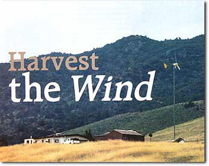
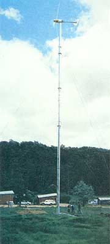
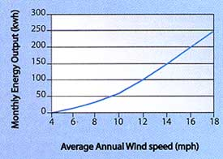
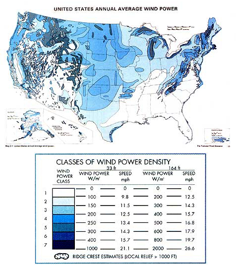
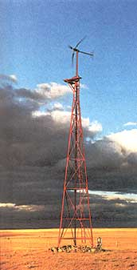
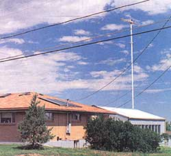
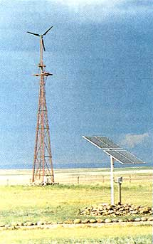
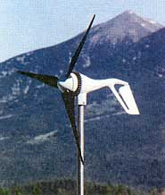

In many parts of the continent, you can tap the power of the wind to generate nonpolluting renewable electricity for your home. Wind plant designs have improved so much-and the costs of oil, natural gas and nuclear power are so high-that many power companies are building large-scale wind plants. Farmers are being paid as much as $2,000 a year to lease one-eighth-acre sites for 200-foot-tall commercial wind plants. Experts predict wind-electric generation will soon become a major energy source in the United States.
The more we rely on renewable energy, the less dependent we are on utility giants and nonrenewable, polluting fossil fuels. With world oil and gas supplies dwindling, experts estimate electricity prices will increase significantly in the coming years. A wind plant, especially in concert with a solar-electric photovoltaic (PV) system, is becoming a cost-effective way to meet the energy needs of sustainable homesteads.
To encourage the shift to wind and solar power, various government programs offer personal tax credits, property tax exemptions, low-interest loans and rebate programs. Some states, like California and Illinois, will reimburse up to 60 percent of your wind system costs. (To learn more about what's available in your state, contact a renewable energy dealer or check out the Database of State Incentives for Renewable Energy.)
The map in the Image Gallery shows areas of the country likely to have sufficient wind speeds to run a home wind plant. Even if you're not located within the breezeways of the plains or the windy valleys of California, you still may be able to produce a portion of your power from wind. Your land's unique topography and microclimate can be more important than overall climatic trends. In the sidebar "Choose the Right Site" (Page 76), you'll find details on how to determine if a specific location has enough wind to be a good wind plant site.
The idea of relying on the wind as an energy source may strike you as risky, since wind seems to be so variable from day to day. But wind actually acts in fairly predictable ways. Analysis of more than a half-century's recorded data, from thousands of sites, shows distinct patterns in both wind direction and speed through the seasons. The windiest months occur in winter, while the calmest winds are during summer. In terms of renewable energy systems, this means a marriage of wind (peaks in winter) and solar power (peaks in summer) can often provide the best power partnership. (For the latest on solar power options, see "Go Solar and Be Secure.")
Two distinct kinds of wind can be found at most locations. Prevalent winds blow frequently and reliably. Energy winds are storm winds or gusts that piggyback the prevalent winds and vary in velocity and duration. On average, there are seven days of prevalent winds and three days of energy winds in any two-week period. Oddly enough, while energy winds blow only one-third of the time, they contain 70 percent of the potential energy that can be harvested by a wind plant. While your region of the country might not be ranked as ideally suited for wind power, your individual microclimate paired with energy winds might yield enough energy to justify a wind plant system.
Several variables-including the wind plant's size and design, and the site's wind speeds and duration-determine how much energy you can harvest from the wind. Power from wind is calculated using the formula:
Power = Swept area of rotor x Wind velocity3 x 1/2 Air density
You can increase power either by using a wind plant with a larger rotor or by placing your plant where it will receive stronger winds-usually on a hill or taller tower. (The third variable in the power formula, air density, doesn't vary much and isn't something you can control.) Note the total power in the wind is a function of the cube of the wind's velocity; just a small increase in velocity results in a much larger increase in power. For example, a 2.6 mph (a 26 percent) increase in wind speed from 10 mph to 12.6 mph will give you a 100 percent increase in power. To achieve this same increase using a larger rotor is usually a more expensive choice than placing a smaller rotor on a higher tower where it will receive stronger winds.
In general, wind plants should be installed on a tower at least 20 feet taller than the tallest object within 400 feet. A tall, lightweight, guyed tower topped with a small (1-kilowatt to 10-kw) wind plant usually yields more bang for your buck than a larger wind plant positioned on a shorter tower.
There are several reasons to mount a wind plant on a tall tower. One is to gain clearance above trees, houses and other obstacles that create turbulence and reduce the power of the wind reaching the wind plant. Wind acts like water in the way it flows across any topography. It is slowed by obstacles such as trees, ridges and rocks, and is channeled by the overall shape of the terrain.
Not only does the wind get smoother at higher distances above the ground, it also increases in velocity. Most windspeed measurements are taken at a height of 6 feet because that's where wind affects us. But the wind speed is always greater higher above the ground. For example, a wind of 8 mph measured at 6 feet indicates a speed of 11.4 mph on a 36-foot tower and 13.9 mph for a 96-foot tower. So what, you say, we've raised the tower 60 feet higher, only to increase the wind speed by a mere 2.5 mph?
Remember the wind power formula: The power of the wind increases with the cube of the wind's velocity. So although the wind speed on top of a 96-foot tower increases just 25 percent compared to the 36-foot tower, the power of the wind reaching the taller wind plant increases 100 percent. The cost of an additional 60 feet of tower and rigging is generally less than the larger wind plant needed to give the same power increase. (To calculate wind power at different heights, visit the Windpower Web site.)
Once you've determined you have a site with average ground-level wind speeds of at least 8 mph (which roughly translate into a speed of 13.9 mph on a 100-foot tower), then you'll need to decide what size wind plant and tower to buy.
Wind plants have both power (or peak power) and wind-speed ratings (rated power). The peak-power rating is usually more prominent, but is the least effective way to evaluate and compare wind plants. Bergey Windpower Sales Manager Steve Wilke says, "Trying to estimate the energy production of a wind turbine based on its peak-power rating is equivalent to trying to estimate the fuel economy of a car based on its top speed." Currently there are no set guidelines for wind plant ratings: Manufacturers can specify any wind speed to set their rated and peak-power ratings. While the rating might be accurate for a particular wind speed, it will not give you a true picture of how the wind plant will perform at your site, particularly at low wind speeds.
Instead of looking at the prominent peak power rating, you need to study the power production curve (at right) for each wind plant model. The amount of power the wind plant can produce varies greatly depending on the wind speed. The steep slopes on the power curve reflect how small increases in wind speed produce large increases in available energy. They also help illustrate the importance of having good information about the average wind speeds at your site before predicting how much power your wind plant will be able to produce.
A complete wind-electric system includes the wind plant and tower, plus a controller, inverter, wiring and battery bank. Wind power expert Paul Gipe recommends buying from a dealer who offers a complete-system package, rather than trying to match components from various manufacturers.
The wind plant captures and transforms wind energy into direct current (DC) electricity. The wind plant must do more than convert the wind's energy into a rotary motion to power the electric generator. It must also automatically and reliably prevent rotor over-speed in high winds or risk damage from centrifugal forces. Finally, it must withstand turbulence, rain, sleet, ice, hail, lightning, corrosion and cold.
Home wind plant costs range from around $1,500 for a 1,000-watt rated wind plant to more than $20,000 for a 10-kw rated turbine. The higher-wattage plants, with their large-diameter, low-rotation-per-minute rotors, are designed to capture energy from low wind speeds. The less expensive models are usually high-speed, small-diameter rotors on lightweight units. Unfortunately, these smaller wind plants, a growing trend in home wind plant design, are proving too noisy for some neighbors in urban and rural areas. Upset neighbors have stopped small-scale wind plant installations or forced their eventual removal.
Paul Gipe has compiled data on the noise effects of several small wind plants. His review is available at www.chelseagreen.com/Wind/articles/noiseswt.htm. Even if you have no close neighbors, don't forget the noise levels of a wind plant with a high-speed rotor may adversely affect your own serenity. (Resist the temptation to mount any wind plant to the rooftop of your home to avoid using a tower. With the roof acting as a resonant chamber, you will be reminded your wind plant is working, day and night, like it or not.)
Wind plant rotors have either two or three blades. Wind plant expert Mick Sagrillo recommends three-bladed rotors. Sagrillo explains in his wind power video (see "Resources," Page 78) that although each blade spoils, or reduces, the wind for the blade behind it, a three-blade rotor is able to yaw-move-freely. A two-blade machine goes through cycles of yawing and stopping, resulting in vibration that fatigues the machine's fasteners and welds fairly quickly, Sagrillo says.
Three main types of towers are suited for residential wind plants: freestanding, guyed and tilt-up towers. Most of us have seen freestanding towers gracing old farm pastures. Because they have a small footprint, freestanding towers are ideal for homeowners who have limited space. However, freestanding towers are expensive due to the amount of metal used in their manufacture.
Guyed towers are the cheapest towers available. A guyed tower consists of a slender pole tied to the ground by at least three guy lines. Both guyed towers and freestanding towers can be installed piece by piece-a task that's time-consuming and requires a crew of people-or can be assembled on the ground and lifted into place by a crane. Once in place, maintenance must be performed on both guyed and freestanding towers by climbing up to the wind plant: a job not for the faint of heart.
Tilt-up towers are a variation of guyed towers, but are braced with at least four guy lines for safe and easy raising and lowering. Unlike freestanding and standard guyed towers, they appeal to many people for their ease of maintenance. With the use of a winch and a small farm tractor or other large vehicle, the tower can be safely lowered to the ground and wind plant checks can be performed on terra firma. The tower is then raised again.
Budget between $1,300 and $10,000 for a tower, based on the size of the wind plant.
Even if you are connected to the grid, you may still want to include a small battery bank in your system to provide backup power if the grid goes down. If you are off the grid, then you will need to decide how large you want your battery bank to be. (You'll probably want to evaluate the benefits of a part-wind, part solar power system.) The battery bank must be sized to absorb the influx of wind-generated electricity and bridge the gap of windless (and sunless) periods.
Battery banks for small systems are usually built around 6-volt, deep-cycle, lead acid batteries. Similar in size and weight to a car battery, they have a service life of four to five years. Larger systems use batteries with larger cases, or one large single case for the whole bank. These cost more but are higher quality and may last as long as 10 years or more. The trick to a longer service life is periodic maintenance and limiting the depth of the discharge to no more than 50 percent of the bank's capacity.
While lead-acid battery technology is less efficient than some newer types, it is nearly a 100-percent-recycled industry, and at this point it offers a better overall cost/benefit ratio than nickel-cadmium or nickel-metal-hydride (NiMH) batteries for the typical renewable energy system.
Even a large battery bank takes up surprisingly little room. It can be placed in a corner of the garage, under a workbench, on a porch or in its own little shed. It must be vented to the outside if it resides indoors, and should be accessible for regular periodic inspections, and for adding any water lost to evaporation over time or from heavy charge or discharge rates.
Battery banks sized to handle the loads and provide a day or more of autonomy cost about $5 per watt. Wiring, disconnects, fuses and breakers, and code-compliant hardware will add a few more dollars per watt to the total.
If your wind plant power is for household use, you'll probably need an inverter-an electronic device that transforms low-voltage DC (direct current) power produced by the wind plant into the 110-volt AC (alternating current) electricity we usually find at the wall socket and most appliances run on. Inverters come in a variety of power ratings and are built to suit various needs. Depending on features, they cost $1 to $2 per watt.
The controller regulates voltage and current, protects the battery bank from overcharging, and monitors and displays system parameters like voltage, current and battery state of charge (often referred to by the acronym "SOC"). The controller also houses controls that may be adjusted to ensure the efficiency, safety and optimum performance of the wind-electric system.
A small, 1,000-watt wind plant system on a 100-foot tower without batteries will cost from $5,000 to $12,000. With 12-mph average winds, it will produce about 2,400 kilowatt-hours per year. A large 10-kw system will cost $28,000 to $35,000 installed, and will produce 10,000 to 18,000 kwh per year. At current electric rates, these systems would have a simple payback period of 10 to 20 years in most areas. Government incentives can cut those costs by 50 percent or more. And if you are selling power back to the utility and electric rates increase (no one thinks they won't), then the economics of wind power become even better.
A wind plant may not be able to meet 100 percent of your energy needs, but it can offset your energy bills. As coal, oil and natural gas become more expensive, it is only a matter of time before wind machines and related renewable energy technologies-solar-electric PV modules, solar-thermal systems and microhydroelectric-will gain the attention and respect of people of every lifestyle who wish to power their dreams in a sustainable way.
Michael Hackleman has been installing and teaching about renewable energy for more than 30 years. He is the author of seven books for the do-it-yourselfer on solar, wind and microhydro electric systems, and electric vehicles. He teaches workshops at the Midwest Renewable Energy Fair and Solar Living Institute each year.
Living off the grid? We love it!
Two years ago my lifelong companion Gundel purchased a small piece of property in the rolling hills of Saskatchewan. Located on the entrance of the Grassland National Park near the U.S. border, the place is famous for having the world's largest medicine wheel. It is truly a spiritual place. Our home, originally a church built in the late 1920s, now offers all the conveniences of a home located in any major city.
We are off the electric grid, making all our electricity from our two wind generators and 12 solar panels. As a backup we use a 12.5 kilowatt diesel generator.
Our daily power consumption is between seven and 10 kilowatt-hours (kwh) per day or about 240 kwh per month, which is less than half that of a typical American home connected to the grid. Walking through our house, you will find everything found in a typical home: refrigerator, freezer, microwave, toaster, coffee machine, dishwasher, washer, TV, VCR, stereo, computer, printer, scanner, fax, numerous lights, fans, water pumps, power tools and, most importantly, our George Foreman outdoor electric grill. The only difference is-other than the grill-we carefully selected appliances that are energy efficient, and we are careful not to run heavy loads all at one time.
Based on our previous experience with wind generators and our area's 14-mph average wind speeds, our first choice for a renewable energy system was a wind plant. Living on the prairie with farms all around us, we also found plenty of freestanding towers. At one time, before the town was connected to the grid, hundreds of Jacob wind turbines dotted the landscape providing electricity for the farms. We made minor repairs to the towers and added a couple of gallons of paint for some color.
The combined rated output of the two wind generators is 1,900 watts (1.9 kw). Although we see less than half that amount produced in light winds, the power is potentially available 24 hours a day. The wind accounts for about three-fourths of our total energy production. In the summer, we generally completely shut off one of the two wind generators and let the solar panels kick in. By the middle of October-when the sun surrenders to the winter months and the loons begin to migrate-the birds and wind plants fly together again. In the last 1 1/2 years, we have had to run the back-up diesel generator only once, for a four-hour period in January.
When you step outside, the silence of the prairie settles in your bones; our wind turbines seldom break that sacred silence. Only when the storms blow through and the gusts peak at 90 mph do I hear the turbines scream for mercy. We check the turbines every four months; I climb up the tower, making sure every bolt is still in place and tight. Sometimes standing on the tower 1 feel the whispers of old friends passing by. For our new friends, we will welcome them in to sit under the glow of our lights, sip a cup of coffee and perhaps listen to a CD on the stereo-all provided by the power of the wind.
- Rolf Heckmann
A small wind-energy system can provide you with a practical and economic source of electricity if:
Your property has a good wind resource; Your home or business is located on at least one acre of land, or your property is in a remote location that does not have easy access to utility lines; Your local zoning codes or covenants allow wind turbines; Your average monthly electric bills are $150 or more; You are comfortable with long-term Investments.
In most areas of North America, wind power alone probably will not be able to supply all of a home's power needs year-round. The average American household consumes 866 kilowatt-hours (kwh) per month-about 28 kwh per day-according to the U.S. Department of Energy. By switching to more efficient appliances, such as front-loading washers and compact fluorescent light bulbs, many people cut their energy usage in half. Conservation is always the cheapest first step. In the renewable energy trade, the rule is every dollar spent on conservation or higher-efficiency saves $3 to $5 in wind- or solar-electric system costs. (For a detailed discussion of conservation options, see "Save Energy-and Money-Now.")
|
 COURTESY BERGEY WINDPOWER Wind plants mounted on tall towers (in this case, a guyed tilt-up tower) effectively capture the wind's power. |
 COURTESY BERGEY WINDPOWER A sample power-production curve for a 900-watt wind plant. Make sure wind plant manufacturers provide you with a power-production curve for each model you are considering. |
 ADAPTED FROM SWMP Wind maps, like the one above (rredc.nrel.gov/wind/pubs/atlas/maps.html), show which regions have at least Class 3 winds sufficient to power a wind plant. |
|
 NREL Zoning:Before you invest in a wind plant, it is a wise idea to make friends with your local building inspector, board of supervisors or planning board. You'll need to check with them to see if a building permit is required for your wind plant. Some areas restrict the height of structures permitted in residentially zoned areas, although variances are often obtainable. |
 COURTESY ROLF HECKMANN A marriage of sun and wind provides plentiful power on the Canadian prairie. |
 NREL |
|
 COURTESY ROLF HECKMAN |
 COURTESY SOUTHWEST WINDPOWER |
|